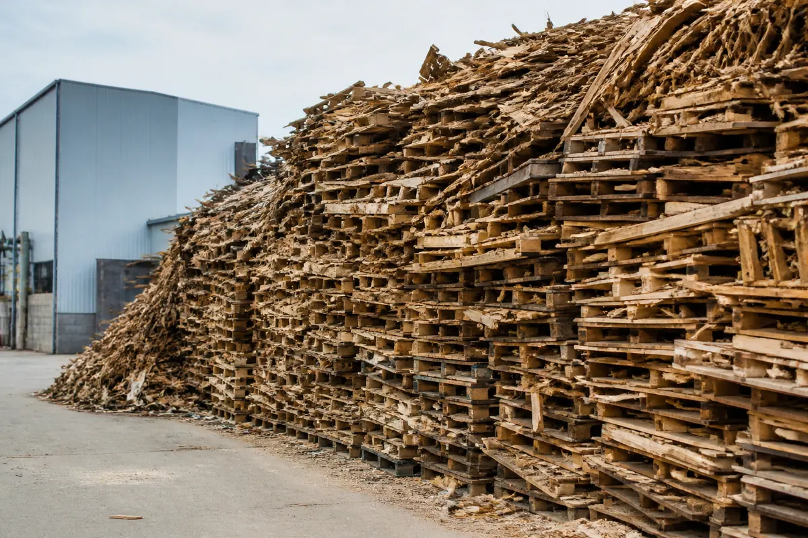
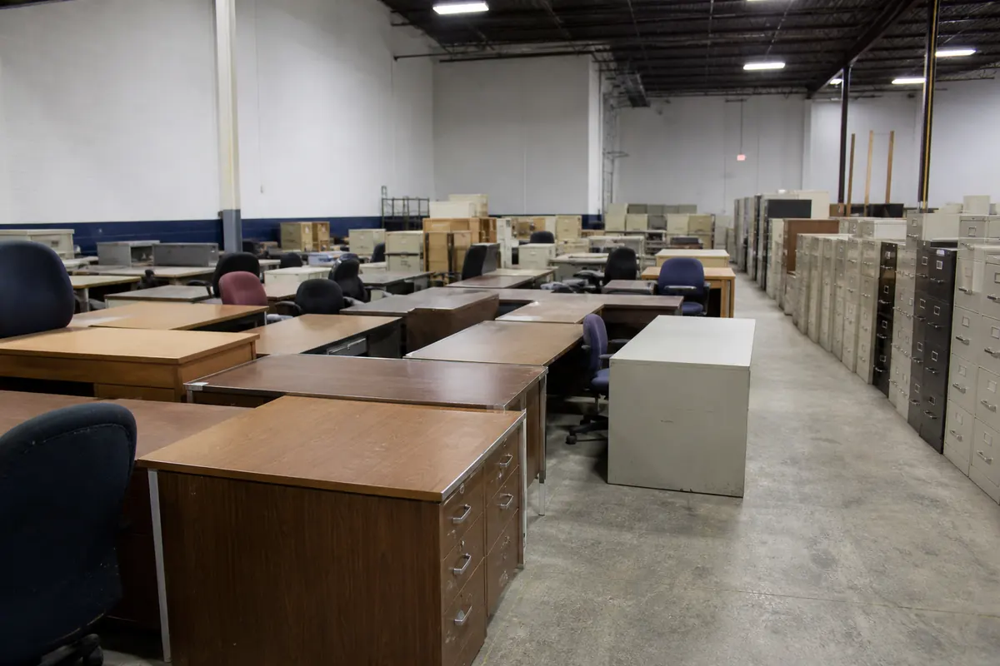
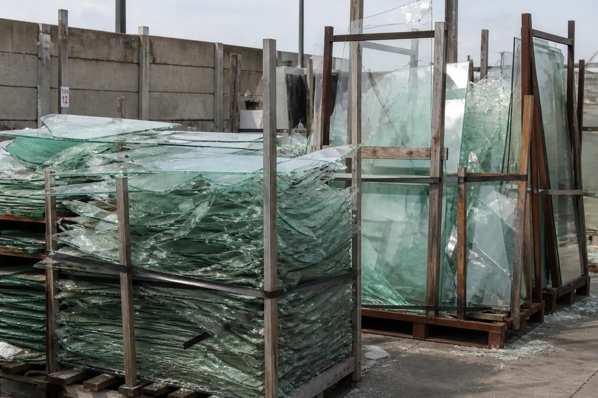

대전 사업장 폐기물 처리,
구마다 다른 현장을 아는 팀이 수거합니다
대덕구 산단 파렛트·고철부터 둔산 관공서 불용집기까지 · 정식 인허가 · 올바로 정식 인계
대전 5개 구별 폐기물 처리 안내
같은 대전이라도 구마다 주된 폐기물과 작업 방식이 다릅니다
대덕구
산단·물류 중심대덕산업단지(대화·문평·신일·읍내동) · 오정동 물류·상가 · 법동·송촌동
- 공장 파손 파렛트·각재·합판 등 폐목재 대량 반출
- 기계 가공 고철·비철 스크랩, 철거 빔·앵글 상차
- 물류창고 랙·불용자산 정리, 톤백 포장재 수거
유성구
연구소·대학 밀집대덕연구개발특구(도룡·전민·관평동) · KAIST·충남대 일대 · 봉명동·구암동 상가
- 연구소·벤처기업 사무 불용집기와 장비 포장재
- 대학·학원 책걸상, 강의실·기숙사 집기 교체분
- 유성 온천 상업지구 상가 폐기물, 원룸 상가 집기
서구
관공서·오피스둔산동 정부청사 일대 · 탄방동·월평동 상가 · 가수원동·관저동
- 관공서·공공기관 불용품 수거와 폐기물처리확인서 발급
- 오피스 사무용 책상·캐비닛·파티션 일괄 철거
- 둔산 상업지구 상가 집기·간판 철거 부산물
중구
원도심 상가은행동·대흥동·선화동 원도심 · 문화동 · 보문산 인근 학교
- 원도심 상가 진열집기·냉장고·집기류 반출
- 학교 책걸상·사무실 집기 교체분 수거
- 소규모 점포 리모델링 폐기물 정리
동구
역세권·물류대전역·신흥동·가양동 · 자양동 물류·상가 · 판암동·용운동
- 물류·유통 상가 파렛트·박스류 정기 수거
- 상가·식당 집기 교체, 주방 설비 반출
- 학교·학원 불용집기, 창고 대량정리
시약·폐오일·석면 등 지정폐기물은 별도 허가 업체에서 처리해야 합니다. 클린환경은 사업장 일반폐기물(폐목재·고철·합성수지·불용집기 등)을 수거하며, 성상 확인 후 지정폐기물이 섞여 있으면 먼저 안내드립니다.
대전 공장 폐목재·파렛트 처리 품목
산단·물류창고·관공서·학교에서 발생하는 품목 합법 수집·운반

폐목재 · 파렛트
올바로 연동파손 파렛트, 각재, 합판, 방부목
대덕산단 · 오정동 물류창고
고철 · 비철금속
당일 상차철거 빔, 앵글, 동선, 기계스크랩
대덕구 · 동구 공장·창고
창고 · 사무 불용집기
확인서 발급물류 랙, 책상, 의자, 캐비닛
둔산 관공서 · 대학·학교
폐합성수지 · 플라스틱
전문 수거사출 잔재물, 파이프, PP/PE
대덕특구 · 유성 벤처공장
폐유리 · 도자기
합법 반출판유리, 강화유리, 요업 파쇄물
중구 원도심 · 서구 상가
복합 일반폐기물
턴키 인계공정 부산물, 톤백 마대 일괄 반출
대전 전역 사업장대전 폐기물 수거 3단계
현장에 오기 전에 사진으로 먼저 확인합니다
사진 전송
폐기물 사진과
위치를 문자로 전송
현장 기준 견적
층수·진입로까지
반영한 정확한 견적
수거·인계
집게차 상차 후
올바로 전산 인계
사업장 폐기물 성상별 처리
성상이 섞이면 처리 단가와 인계 방법이 달라집니다. 현장에서 분리해 반출합니다
| 성상 | 주요 품목 | 처리·인계 |
|---|---|---|
| 폐목재 | 파렛트·각재·합판, 목재 포장재 | 못·철물을 분리한 뒤 재활용·소각 처리, 올바로시스템 전산 인계 |
| 고철·비철 | 철제 프레임, 알루미늄 스크랩, 설비 부속 | 재질별로 분리해 반출, 처리 결과는 전산 인계 기록으로 남김 |
| 폐합성수지 | 톤백·비닐 포장재, 플라스틱 팔레트·용기 | 이물질을 털어내고 압축·결속 후 반출 |
| 폐유리·도자기 | 유리 파렛트, 거울, 타일·도기류 | 깨짐 방지를 위해 전용 용기에 담아 분리 반출 |
| 혼합 일반폐기물 | 사무집기, 포장 잔재, 공정 부산물 | 재활용 가능 품목을 먼저 선별한 뒤 처리 |
| 특수 성상 | 폐화장품·폐타이어·폐오일이 묻은 자재 | 성상별 처리 기준에 맞춰 분리 보관 후 반출 |
※ 성상·물량·층수와 차량 진입 조건에 따라 견적이 달라집니다. 사진과 배출 지역을 문자로 보내주시면 실시간 견적으로 안내드립니다.
관공서·학교·기관 불용품 처리 절차
품목 확인부터 폐기물처리확인서 발급까지 다섯 단계로 진행합니다
책상·캐비닛·책걸상·파티션 등 품목과 대략의 수량을 정리해 주세요. 사진이 있으면 더 정확합니다.
보관 장소(층수·엘리베이터 유무)와 반출 가능 시간을 알려주시면 차량과 인원을 정합니다.
성상과 물량에 맞춰 실시간 견적을 안내하고, 기관 일정에 맞춰 반출일을 정합니다.
허가 차량으로 반출하고 올바로시스템에 전산 인계해 처리 이력을 남깁니다.
계약·정산 자료로 쓰실 수 있도록 폐기물처리확인서를 발급해 드립니다.
※ 학교 방학·연말처럼 물량이 몰리는 시기에는 반출 일정을 미리 잡아 두시는 편이 좋습니다.
대전 관공서·학교 폐기물처리확인서 발급
무허가 위탁 시 배출자에게 돌아가는 책임을 미리 막습니다
✓ 사업장비배출계 정식 인허가 차량 보유
✓ 올바로시스템 환경부 법정 전산망 정식 인계
✓ 관공서 · 학교 폐기물처리확인서 발급
✓ 맞춤 차량 배차로 중간 거품 없는 견적
✓ 대전 5개 구 현장 동선을 아는 기사가 직접 상차
대전 폐기물 처리업체 자주 묻는 질문
대덕산단 · 대덕특구 · 둔산 관공서 현장에서 받은 질문들
Q.대전 대덕구 산업단지 파렛트·고철도 당일 수거가 되나요?
대덕산업단지(대화·문평·신일·읍내동)와 오정동 물류·상가 지역은 집게차가 바로 출동하는 권역입니다. 파손 파렛트·폐목재, 고철·비철 스크랩, 톤백 포장재 등을 사진으로 보내주시면 물량과 성상을 확인해 당일 배차 가능 시간을 바로 안내드리고, 수거 후 올바로시스템 전산 인계까지 처리합니다.
Q.관공서·학교 불용품 처리할 때 폐기물처리확인서를 받을 수 있나요?
네. 둔산 정부청사 인근 관공서, 대전 각 구청 산하 기관, 초·중·고·대학의 책걸상·교무실 집기·불용 비품을 수거한 뒤 폐기물처리확인서를 발급합니다. 정식 인허가 차량과 올바로 전산 인계 기록이 남기 때문에 계약·정산 자료로 그대로 쓰실 수 있습니다.
Q.대전 5개 구 전역에 출동하나요?
대덕구·유성구·서구·동구·중구 대전 전역에 출동합니다. 대덕구 산단과 오정동, 유성구 대덕연구개발특구와 대학가, 서구 둔산·탄방·월평, 중구 원도심 상가, 동구 대전역·가양동 일대까지 같은 기준으로 견적과 수거를 진행합니다.
Q.대전 폐기물 처리 비용은 어떻게 정해지나요?
품목의 성상(폐목재·고철·합성수지·불용집기 등), 물량, 작업 층수와 차량 진입 조건, 운반 거리를 기준으로 산정합니다. 5톤 집게차로 바로 배차하기 때문에 거품이 적고, 사진과 배출 지역만 문자로 보내주시면 무료로 견적을 안내드립니다.
Q.대전 관공서·학교 불용품 처리 절차는 어떻게 되나요?
품목·수량 확인 → 사진·위치 전달 → 견적·일정 안내 → 반출·올바로 인계 → 폐기물처리확인서 발급 순서로 진행합니다. 보관 장소의 층수와 엘리베이터 유무, 반출 가능 시간을 알려주시면 차량과 인원을 정해 일정을 잡습니다.
Q.신용카드 결제나 세금계산서 발행이 되나요?
네. 수거·처리 비용은 신용카드로 결제하실 수 있고, 요청하시면 현금영수증과 전자세금계산서를 발행합니다. 기관·기업 정산용으로 폐기물처리확인서가 필요하시면 함께 준비해 드립니다.
대전 폐기물 처리 비용 무료 견적
사진 또는 내용을 남겨주시면 빠르게 연락드립니다
폐기물 수거·처리 비용은 신용카드로 결제하실 수 있습니다. 현금영수증과 전자세금계산서도 발행하니, 기관·기업 정산에 필요하시면 상담 때 말씀해 주세요.
세종 · 천안 · 아산 · 청주 · 진천 · 금산 · 옥천 · 공주 · 논산 권역 안내